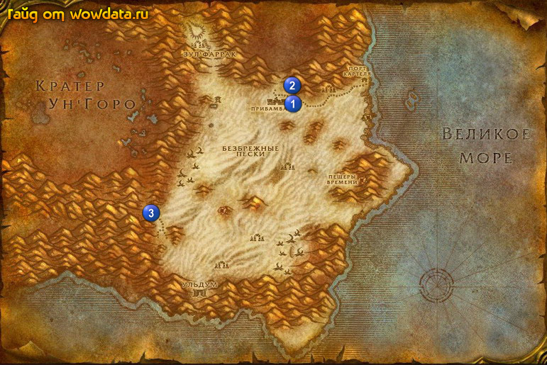

1) Идите на восток на кладбище 1 (54, 28) выпейте ваш [Эликсир Видере].
2) Теперь вы должны умереть но не воскресайте а освободите дух и идите на север 2 (53, 23) и закончите <Встречаемся на кладбище>, начните <Замогильная история>.
3) Идите назад 1 (54, 28), воскресните и используйте стоящий рядом надгробный памятник, закончите <Замогильная история>, начните <Меч Линкена>.
4) Бегите в Кратер Ун'Горо 3, да да именно бегите для экономии времени, так как нам нужна юго-восточная часть.